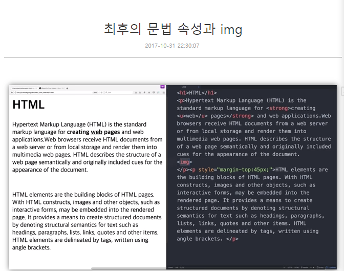

- html
- css
- javascript
Coding을 배우다
면접시험까지 끝나고 그 다음주 첫날. 그동안 마음에 두고 있던 코딩을 배우기 시작했다. 유튜브를 검색하던 중 코딩공부 순서를 정리해 주는 영상(조코딩)을 보았다. 그리고 그 순서와 잘 맞는 사이트(생활코딩)도 발견했다.
길지 않은 동영상강의와 진도에 맞게 공부할 수 있도록 진도표를 제공한다. 자연스레 어느새 시작한 코딩배우기의 첫 시작은 HTML배우기.
그 매일의 배움을 기록한다.
Day1
시작. 아톰에디터를 설치하다. 아이콘이 위험해보인다. 첫 실습으로 이 글을 쓰는 페이지 파일을 만들었다. 상당히 흥미롭다.
Day2
하루만에 후다닥 2일차까지 끝내버렸다. Strong, u, h1~h6 이라는 이름의 태그들을 공부했다. 태그를 썼다 지웠다 하는것이 흰 종이에 연필로 쓰고 지우개로 지우는 것 같다. 마치 초등학교 1학년 글씨를 처음 배우고 그림일기를 쓰는 기분이다.
